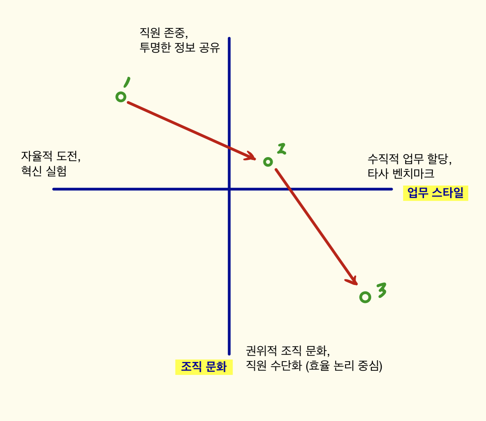

1. 근무자가 마주할 수 있는 변화들
변화가 생기는 배경
- 스타트업은 단기에 추가 투자 / 장기에 기업공개(IPO)를 목표로 운영된다.- 기업공개는 주주와 투자자, 주요 직원이 큰 돈을 벌 수 있는 (거의) 유일한 방법이다.
- 그런데 기업가치를 높게 인정받으려면, 이익이 뒷받침되어야 한다.
- 단기에 빠르게 이익을 개선하기 위해 일부 기업들은 '수직적 업무 스타일'과 '권위적 문화'를 활용하곤 한다.
- 왜냐하면 그것이 비교적 손쉬운 경영 방법이기 때문이다.
- 그러면 직원들이 중요하게 여겨온 '자율적 업무'나 '직원 존중' 같은 가치를 축소시킬 수 있다.

변화가 진행될 (하나의) 가능성
- 1번에서 시작해 2번으로, 다시 3번으로 향한다 (이렇게 가는 것이 더 영리한 경로이기 때문)- 1번: 회사가 직원을 존중해 투명하게 정보를 공유하고, 직원이 스스로 업무 계획을 수립하고 실행할 수 있다.
- 2번: 변화는 '조직 문화'보다는 '업무 스타일'에서 먼저 시작된다. 즉, '이 일을 하라'는 식의 지시가 빈번해진다. 마치 상급자만이 뛰어난 판단력을 갖춘 것처럼 여겨진다. 차츰 업무의 시작과 끝이 누군가의 지시에 따라 진행된다.
- 3번: 변화가 '조직 문화'로까지 확산된다. 정보가 좀처럼 투명하게 공개되지 않으며, (감히) 상급자에게 반대 의견을 내기 어렵다. 하급 직원일수록 쉽게 교체될 수 있는 존재로 여겨진다. 상급자는 하급 직원에 대한 (거의 모든) 결정권을 갖는다.
- 결론적으로 회사는 '수직적 업무 지시'와 '권위적인 조직 문화' 로 서서히 변해갈 수 있다.